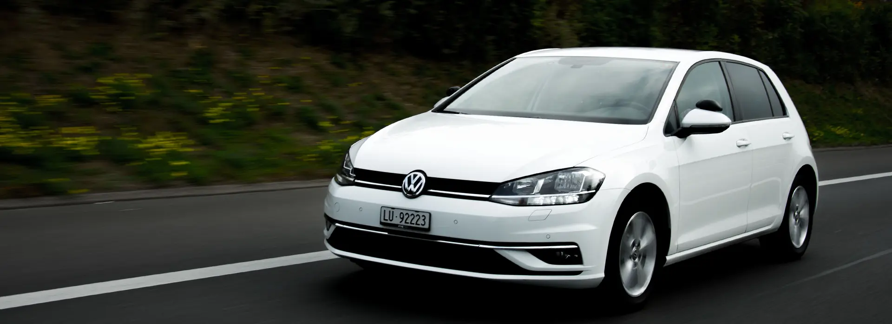
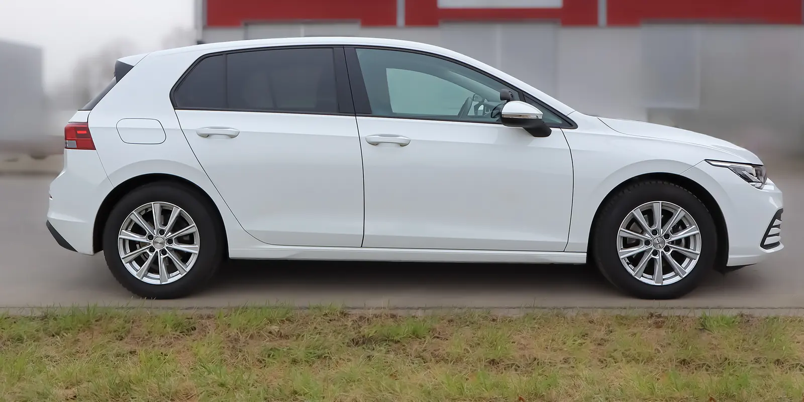

Fahrschule · Sempach · Sursee
Ab ans Steuer.
Kompetente und auf Ihre Bedürfnisse angepasste Fahrausbildung in der Region Sempach und Sursee. Seit 2006.
- 2006gegründet
in Sempach - 50Minuten pro
Fahrlektion - 4Abende VKU
bei uns - 88.–CHF pro Lektion
im 5er-Abo
Ihr Programm.
Fahrstunden, Verkehrskunde und der Weg zum definitiven Ausweis. Das Wichtigste auf einen Blick.
In 5 Etappen
zum Ausweis.
Alles zum Lernfahrausweis
- 01
Gesuch
Formular Nr. 12 beim Strassenverkehrsamt Luzern einreichen.
- 02
Theorie
Theorieprüfung bestehen, dann gibt es den Lernfahrausweis.
- 03
Fahren und VKU
Fahrstunden bei uns, dazu der VKU an vier Abenden.
- 04
Prüfung
Bestanden! Sie erhalten den Ausweis auf Probe für 3 Jahre.
- 05
WAB
Weiterbildungstag im ersten Jahr, dann wird der Ausweis definitiv.
Unser Fahrschulauto
Weisser
VW Golf.

- 125PS, 92 kW
- 1400ccm Hubraum
- 4Zylinder
- TSIBenzin
Klare Preise.
Bei bestandener Führerprüfung erhalten Sie von uns einen Gutschein im Wert von CHF 50.– für den WAB-Kurs.
Alle Preise- EinzelfahrstundeLektion à 50 MinutenCHF90
- 5er-AboCHF 88.– pro LektionCHF440
- AdministrationsgebühreinmaligCHF100
- Theorie-LernsoftwareAngebot und Preiseauf Anfrage

Über uns
Irene & Martin Koch.
Seit 2006 in Sempach. Dank regelmässigen Aus- und Weiterbildungen immer auf dem neusten Stand, mit einem angenehmen und freundlichen Umgangston. So kommen Sie motiviert ans Ziel.
- Irene Koch079 775 89 17
- Martin Koch079 775 56 47
- E-Mailinfo@fahrschule-k.ch